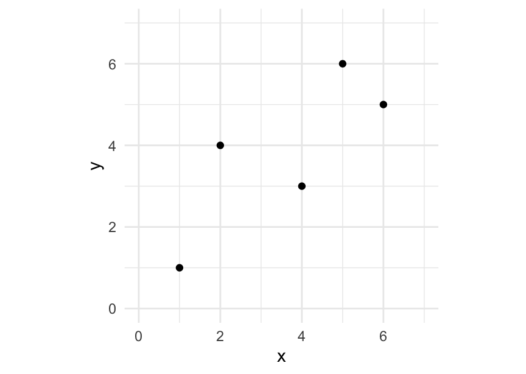
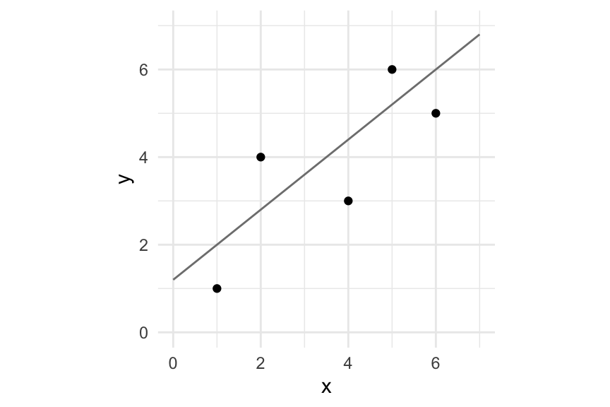
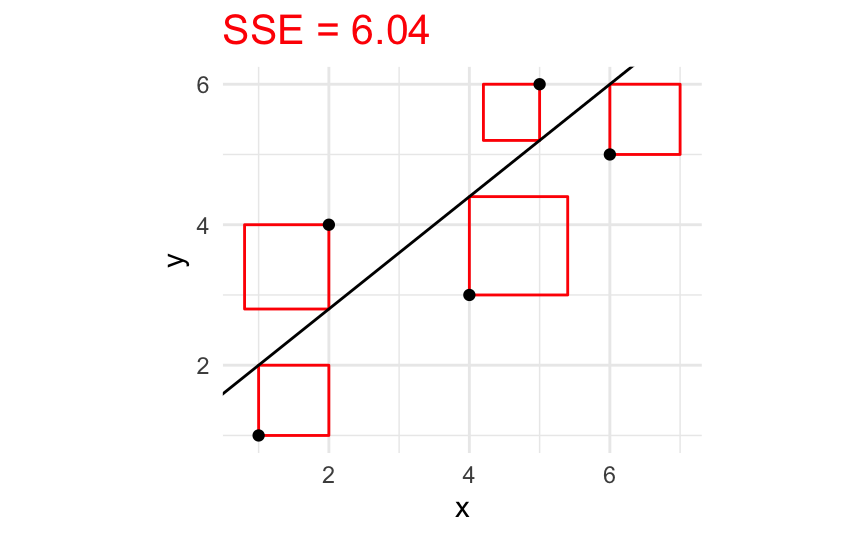
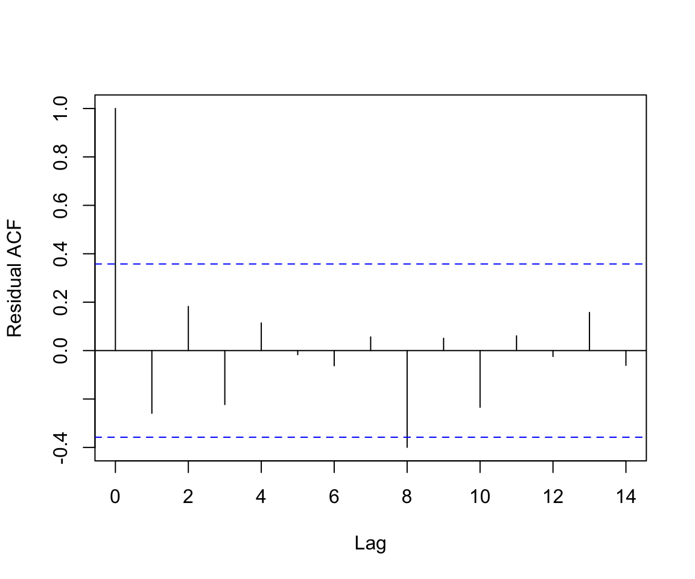
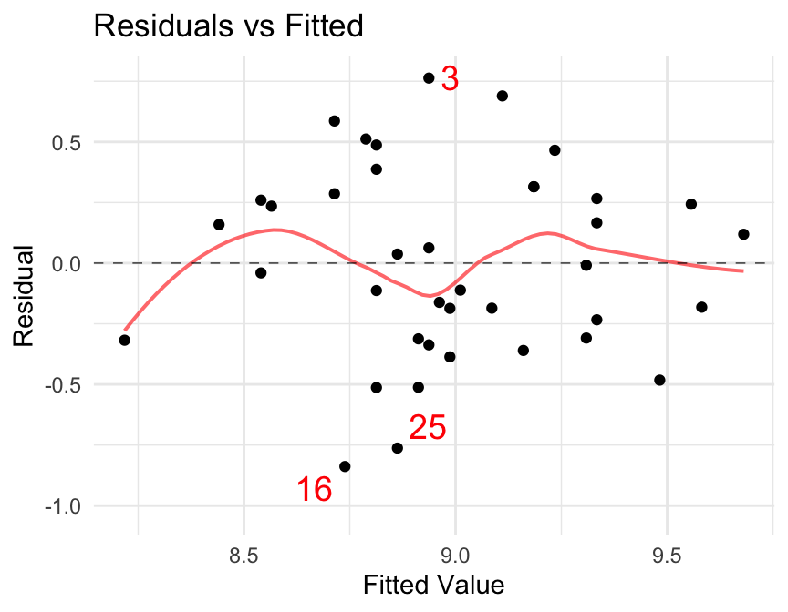
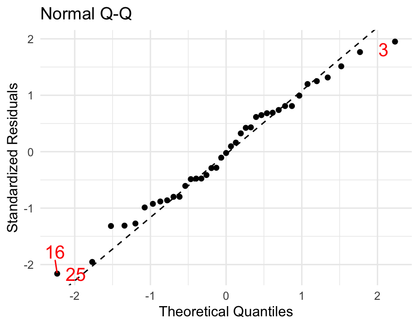
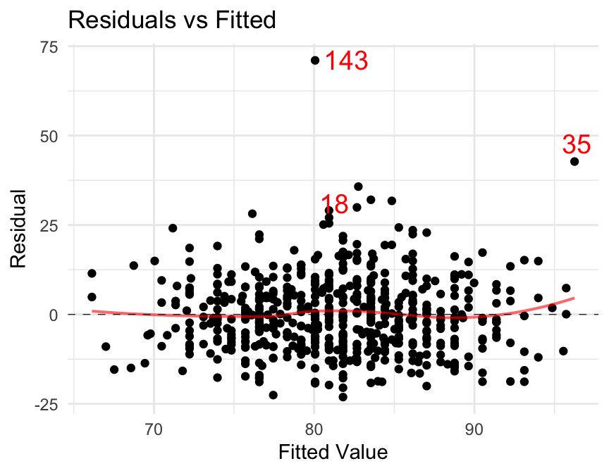

SomeData <- tibble(
x = c(1,2,4,5,6),
y = c(1,4,3,6,5)
)
SomeData7 Linear Models
In Chapter 6 we learned how to estimate one quantity based on its (known) relationship to other quantities. For example, we estimated the number of dimes in a sack of dimes from our estimates of the weight of the dimes and the average weight of a dime.
In this chapter we will explore how to use data to determine the relationship among two or more variables when this relationship is not known in advance. The general framework we will use is
\[ Y = f(x_1, x_2, \dots, x_k) + \varepsilon \]
\(Y\) is the response variable that we are trying to estimate from \(k\) explanatory or predictor variables \(x_1, x_2, \dots, x_k\).
The relationship between the explanatory variables and the response variables is described by a function \(f\).
The relationship described by \(f\) need not be a perfect fit. The error term in the model, \(\varepsilon\), describes how individual responses differ from the value given by \(f\).
We will model \(\varepsilon\) with a distribution – typically a distribution with a mean of 0 – so another way to think about this model is the for a given values of the predictors, the values of \(Y\) have a distribution. The mean of this distribution is specified by \(f\) and the shape by \(\varepsilon\).
7.1 The Simple Linear Regression Model
\[ Y = \beta_0 + \beta_1 x + \varepsilon \qquad \mbox{where $\varepsilon \sim \Norm(0,\sigma)$.} \]
In other words:
The mean response for a given predictor value \(x\) is given by a linear formula \[ \mbox{mean response} = \beta_0 + \beta_1 x \]
This can also be written as \[ \E(Y \mid X = x) = \beta_0 + \beta_1 x \]
The distribution of all responses for a given predictor value \(x\) is normal.
The standard deviation of the responses is the same for each predictor value.
Furthermore, in this model the values of \(\varepsilon\) are independent.
There are many different things we might want to do with a linear model, for example:
- Estimate the coefficients \(\beta_0\) and \(\beta_1\).
- Estimate the value \(Y\) associated with a particular value of \(x\).
- Say something about how well a line fits the data.
7.2 Fitting the Simple Linear Model
7.2.1 The Least Squares Method
We want to determine the best fitting line to the data. The usual method is the method of least squares1, which chooses the line that has the smallest possible sum of squares of residuals, where residuals are defined by
\[ \mbox{residual} = \mbox{observed} - \mbox{predicted} \]
Consider the following small data set.
gf_point( y ~ x, data = SomeData) |>
gf_lims(y = c(0, 7), x = c(0, 7))
- Add a line to the plot that “fits the data well”. Don’t do any calculations, just add the line.
- Now estimate the residuals for each point relative to your line
- Compute the sum of the squared residuals, \(SSE\).
- Estimate the slope and intercept of your line.
For example, suppose we we select a line that passes through \((1,2)\) and \((6,6)\). the equation for this line is \(y = 1.2 + 0.8 x\), and it looks like a pretty good fit:
f <- makeFun( 1.2 + 0.8 * x ~ x)
gf_point(y ~ x, data = SomeData) |>
gf_lims(x = c(0, 7), y = c(0, 7)) |>
gf_fun( f(x) ~ x, col = "gray50" )
The residuals for this function are
resids <- with(SomeData, y - f(x)) ; resids [1] -1.0 1.2 -1.4 0.8 -1.0and \(SSE\) is
sum(resids^2)[1] 6.04The following plot provides a way to visualize the sum of the squared residuals (SSE).

If your line is a good fit, then \(SSE\) will be small.
The best fitting line will have the smallest possible \(SSE\).
The lm() function will find this best fitting line for us.
model1 <- lm( y ~ x, data = SomeData ); model1
Call:
lm(formula = y ~ x, data = SomeData)
Coefficients:
(Intercept) x
1.1628 0.7326 This says that the equation of the best fit line is \[ \hat y = 1.1627907 + 0.7325581 x \]
gf_point(y ~ x, data = SomeData) |>
gf_lm()Warning: Using the `size` aesthietic with geom_line was deprecated in ggplot2 3.4.0.
ℹ Please use the `linewidth` aesthetic instead.We can compute \(SSE\) using the resid() function.
SSE <- sum (resid(model1)^2); SSE[1] 5.569767As we see, this is a better fit than our first attempt – at least according to the least squares criterion. It will better than any other attempt – it is the least squares regression line.
For a line with equation \(y = \hat\beta_0 + \hat\beta_1 x\), the residuals are \[
e_i = y_i - (\hat\beta_0 + \hat\beta_1 x)
\] and the sum of the squares of the residuals is \[
SSE = \sum e_i^2 = \sum (y_i - (\hat\beta_0 + \hat\beta_1 x) )^2
\] Simple calculus (which we won’t do here) allows us to compute the best \(\hat\beta_0\) and \(\hat\beta_1\) possible.
These best values define the least squares regression line. We always compute these values using software, but it is good to note that the least squares line satisfies two very nice properties.
- The point \((\mean x, \mean y)\) is on the line.
This means that \(\mean y = \hat\beta_0 + \hat\beta_1 \mean x\) (and \(\hat\beta_0 = \mean y - \hat\beta_1 \mean x\)) #. The slope of the line is \(\displaystyle b = r \frac{s_y}{s_x}\) where \(r\) is the correlation coefficient: \[ r = \frac{1}{n-1} \sum \frac{ x_i - \mean x }{s_x} \cdot \frac{ y_i - \mean y }{s_y} \]
Since we have a point and the slope, it is easy to compute the equation for the line if we know \(\mean x\), \(s_x\), \(\mean y\), \(s_y\), and \(r\).
7.2.2 An Example: Estimating OSA
In a study of eye strain caused by visual display terminals, researchers wanted to be able to estimate ocular surface area (OSA) from palpebral fissure (the horizontal width of the eye opening in cm) because palpebral fissue is easier to measure than OSA.
Eyes <-
read.table(
"https://rpruim.github.io/Engineering-Statistics/data/PalpebralFissure.txt",
header = TRUE)
head(Eyes, 3) x.bar <- mean( ~ palpebral, data = Eyes)
y.bar <- mean( ~ OSA, data = Eyes)
s_x <- sd( ~ palpebral, data = Eyes)
s_y <- sd( ~ OSA, data = Eyes)
r <- cor( palpebral ~ OSA, data = Eyes)
c( x.bar = x.bar, y.bar = y.bar, s_x = s_x, s_y = s_y, r = r ) x.bar y.bar s_x s_y r
1.0513333 2.8403333 0.3798160 1.2083374 0.9681245 slope <- r * s_y / s_x
intercept <- y.bar - slope * x.bar
c(intercept = intercept, slope = slope) intercept slope
-0.3977389 3.0799672 Fortunately, statistical software packages do all this work for us, so the calculations of the preceding example don’t need to be done in practice.
In a study of eye strain caused by visual display terminals, researchers wanted to be able to estimate ocular surface area (OSA) from palpebral fissure (the horizontal width of the eye opening in cm) because palpebral fissue is easier to measure than OSA.
osa.model <- lm(OSA ~ palpebral, data = Eyes)
osa.model
Call:
lm(formula = OSA ~ palpebral, data = Eyes)
Coefficients:
(Intercept) palpebral
-0.3977 3.0800 lm() stands for linear model. The default output includes the estimates of the coefficients (\(\hat\beta_0\) and \(\hat \beta_1\)) based on the data. If that is the only information we want, then we can use
coef(osa.model)(Intercept) palpebral
-0.3977389 3.0799672 This means that the equation of the least squares regression line is \[ \hat y = -0.398 + 3.08 x \]
We use \(\hat y\) to indicate that this is not an observed value of the response variable but an estimated value (based on the linear equation given).
R can add a regression line to our scatter plot if we ask it to.
gf_point( OSA ~ palpebral, data = Eyes) |>
gf_lm()We see that the line does run roughly “through the middle” of the data but that there is some variability above and below the line.
7.2.3 Explanatory and Response Variables Matter
It is important that the explanatory variable be the “x” variable and the response variable be the “y” variable when doing regression. If we reverse the roles of OSA and palpebral we do not get the same model. This is because the residuals are measured vertically (in the \(y\) direction).
7.3 Estimating the Response
We can use our least squares regression line to estimate the value of the response variable from the value of the explanatory variable.
If the palpebral width is 1.2 cm, then we would estimate OSA to be
\[ \hat{`osa`} = -0.398 + 3.08 \cdot 1.2 = 3.298 \]
R can automate this for us too. The makeFun() function will create a function from our model.
If we input a palpebral measurement into this function, the function will return the estimated OSA.
estimated.osa <- makeFun(osa.model)
estimated.osa(1.2) 1
3.298222 As it turns out, the 17th measurement in our data set had a palpebral measurement of 1.2 cm.
Eyes[17,]The corresponding OSA of 3.76 means that the residual for this observation is \[ \mbox{observed} - \mbox{predicted} = 3.76 - 3.2982218 = 0.4617782 \]
7.3.1 Cautionary Note: Don’t Extrapolate!
While it often makes sense to generate model predictions corresponding to x-values within the range of values measured in the dataset, it is dangerous to extrapolate and make predictions for values outside the range included in the dataset. To assume that the linear relationship observed in the dataset holds for explanatory variable values outside the observed range, we would need a convincing, valid justification, which is usually not available. If we extrapolate anyway, we risk generating erroneous or even nonsense predictions. The problem generally gets worse as we stray further from the observed range of explanatory-variable values.
7.4 Parameter Estimates
7.4.1 Interpreting the Coefficients
The coefficients of the linear model tell us how to construct the linear function that we use to estimate response values, but they can be interesting in their own right as well.
The intercept \(\beta_0\) is the mean response value when the explanatory variable is 0. This may or may not be interesting. Often \(\beta_0\) is not interesting because we are not interested in the value of the response variable when the predictor is 0. (That might not even be a possible value for the predictor.) Furthermore, if we do not collect data with values of the explanatory variable near 0, then we will be extrapolating from our data when we talk about the intercept. (Extrapolating is dangerous because we can’t really be sure that the relationships we’ve uncovered with our model really hold for variable values outside the range we measured.)
The estimate for \(\beta_1\), on the other hand, is nearly always of interest. The slope coefficient \(\beta_1\) tells us how quickly the response variable changes per unit change in the predictor. This is an interesting value in many more situations. Furthermore, when \(\beta_1 = 0\), then our model does not depend on the predictor at all. So if we construct a confidence interval for \(\beta_1\), and it contains 0, then we do not have sufficient evidence to be convinced that our predictor is of any use in predicting the response.
7.4.2 Estimating \(\sigma\)
There is one more parameter in our model that we have been mostly ignoring so far: \(\sigma\) (or equivalently \(\sigma^2\)). This is the parameter that describes how tightly things should cluster around the regression line. We can estimate \(\sigma^2\) from our residuals:
\[ \begin{aligned} \hat\sigma^2 & = MSE = \frac{ \sum_i e_i^2 }{ n -2 } \\ \hat\sigma & = RMSE = \sqrt{MSE} = \sqrt{\frac{ \sum_i e_i^2 }{ n -2 } } \end{aligned} \]
The acronyms \(MSE\) and \(RMSE\) stand for Mean Squared Error and Root Mean Squared Error. The numerator in these expressions is the sum of the squares of the residuals \[ SSE = \sum_i e_i^2 \;. \] This is precisely the quantity that we were minimizing to get our least squares fit. \[ MSE = \frac{SSE}{DFE} \] where \(DFE = n-2\) is the degrees of freedom associated with the estimation of \(\sigma^2\) in a simple linear model. We lose two degrees of freedom when we estimate \(\beta_0\) and \(\beta_1\), just like we lost 1 degree of freedom when we had to estimate \(\mu\) in order to compute a sample variance.
\(RMSE = \sqrt{MSE}\) is listed in the summary output for the linear model as the residual standard error because it is the estimated standard deviation of the error terms in the model.
summary(osa.model)
Call:
lm(formula = OSA ~ palpebral, data = Eyes)
Residuals:
Min 1Q Median 3Q Max
-0.60942 -0.19875 -0.01902 0.21727 0.66378
Coefficients:
Estimate Std. Error t value Pr(>|t|)
(Intercept) -0.3977 0.1680 -2.367 0.0251 *
palpebral 3.0800 0.1506 20.453 <2e-16 ***
---
Signif. codes: 0 '***' 0.001 '**' 0.01 '*' 0.05 '.' 0.1 ' ' 1
Residual standard error: 0.308 on 28 degrees of freedom
Multiple R-squared: 0.9373, Adjusted R-squared: 0.935
F-statistic: 418.3 on 1 and 28 DF, p-value: < 2.2e-16We will learn about other parts of this summary output shortly. Much is known about the estimator \(\sigma^2\), including
- \(\hat \sigma^2\) is unbiased (on average it is \(\sigma^2\)), and
- the sampling distribution is related to a Chi-Squared distribution with \(n-2\) degrees of freedom.
(Chi-Squared distributions are a special case of Gamma distributions.) More specifically, \[ \frac{SSE}{\sigma^2} = \frac{(n - 2) \hat \sigma^2}{\sigma^2} \sim \Chisq(n-2) \;. \]
7.5 Checking Assumptions
7.5.1 What have we assumed?
In fitting a linear regression model, we have assumed:
- A linear relationship between the explanatory and response variables
- The errors (\(\epsilon\)) are Normally distributed
- Independence of the errors (in particular, no correlation over time between successive errors for data points collected over time)
- Homoscedasticity of the errors – this means that the variance (spread) of the errors is constant over time, and over the full range of explanatory and predictor variables
7.5.2 Don’t Fit a Line If a Line Doesn’t Fit
The least squares method can be used to fit a line to any data – even if a line is not a useful representation of the relationship between the variables. When doing regression we should always look at the data to see if a line is a good fit. If it is not, then the simple linear model is not a good choice and we should look for some other model that does a better job of describing the relationship between our two variables.
7.5.3 Checking the Residuals
We look at the residuals (not just the data scatter plot) because some of our assumptions refer specifically to them. Also, often, it is easier to assess the linear fit by looking at a plot of the residuals than by looking at the natural scatter plot, because on the scale of the residuals, violations of our assumptions are easier to see.
So, to verify that our linear regression assumptions are sensible, we can examine the model residuals. Residuals should be checked to see that their distribution looks approximately normal and that thier standard deviation (the spread of the residuals) remains consistent across the range of our data (and across time).
In addition, especially if the data were collected over time (measurements made in order during an experiment; data points collected at a series of time points), it is important to verify that the residuals are independent of one another over time. To look for this problem, we can look at a scatter plot of the residuals as a function of time, and suspect a problem if we see series of very large, or very small, residuals all in a row. Another plot that can help us look for non-independence in the residuals is a plot of the autocorrelation function (ACF), obtained using the acf() function in R. This function computes and plots the correlation coefficient R for the residuals at various “lags”. For example, the correlation coefficient for lag 1 is the correlation coefficient between each residual (corresponding to the ith datapoint) and the preceding one (the i-1th data point). Lag 2 is between the ith and i-2th data point, and so on. If the residuals are not independent, then these coefficients will have large absolute values. (Note: the “lag 0” coefficient measures the correlation of the ith residual with itself, so it is always 1. This does NOT indicate any problem with the linear regression model.)
In general, we might want to check the following plots of the residuals:
- Residuals as a function of “fitted values”, or model predictions for the x-values obseved in the actual data set.
- Residuals as a function of the observed values of the explanatory variable (from the actual data set).
- Normal quantile-quantile plot of the residuals (note: in Chapter 4, we made these by hand for any distribution; you may also use the shortcut function qqmath() as illustrated below, to make them for the Normal distribution.)
- Residuals as a function of time (if you know the order in which they were collected, or if the explanatory variable is a time-related one).
- Residual autocorrelation function plot (if the data points were collected over time, or if the explanatory variable is a time-related one).
For all the scatter plots, we want to make sure the residuals “look random” – the extent of the spread of the residuals should not vary with time or x or y (``trumpet”-shaped plot). If there is a pattern, it suggests a problem with the homoscedasticity assumption. There should not be long runs of similar residuals, especially over time; if there are, it suggests non-independence of the residuals. There should also be no apparent trends in the plot, linear or non-linear; if there are, it suggests that the relationship between the predictor and response variables was not linear. In an autocorrelation plot, the correlation coefficients (except for lag 0) should not be too large, far exceeding the dotted guide-lines on the plot; if they are, there is probably a problem with the independence assumption.
Returning to our OSA data, we can obtain the residuals using the resid() function and plot them.
osa.hat <- makeFun(osa.model)
preds <- osa.hat(Eyes$palpebral)
gf_point( resid(osa.model) ~ preds, data = Eyes,
title ="Residuals versus fitted values")gf_qq( ~ resid(osa.model), data = Eyes, title = "Normal QQ plot")gf_point(resid(osa.model) ~ palpebral, data = Eyes,
title = "Residuals versus explanatory variable")acf(resid(osa.model), ylab = "Residual ACF", main = "")
If the assumptions of the model are correct, there should be no distinct patterns to these scatter plots of the residuals, and the normal-quantile plot should be roughly linear (since the model says that differences between observed responses and the true linear fit should be random noise following a normal distribution with constant standard deviation).
In this case things look pretty good.
We can save ourselves a little typing if we create these plots using plot() or mplot().
mplot(osa.model, w = 1:2)[[1]]`geom_smooth()` using formula = 'y ~ x'
[[2]]The “standardized” residuals are the residuals that have been adjusted to have an expected variance (and hence also standard deviation) of 1. Roughly, they are the residuals divided by \(\hat \sigma\), but there is an additional adjustment that is made as well. This gives us a kind of unitless version of the residual and the normal-quantile plot using standardized residuals does a better job of indicating whether the normality assumption is compatibly with the data. (Remember, the normality assumption is about the errors not the residuals. The standardized residuals should behave roughly like a normal distribution if the errors are normally distributed.) Typically the shape of the normal-quantile plot made with raw residuals and the one made with standarized residuals will be very similar.
7.5.4 Outliers in Regression
Outliers can be very influential in regression, especially in small data sets, and especially if they occur for extreme values of the explanatory variable. Outliers cannot be removed just because we don’t like them, but they should be explored to see what is going on (data entry error? special case? etc.)
Some researchers will do “leave-one-out” analysis, or “leave some out” analysis where they refit the regression with each data point left out once. If the regression summary changes very little when we do this, this means that the regression line is summarizing information that is shared among all the points relatively equally. But if removing one or a small number of values makes a dramatic change, then we know that that point is exerting a lot of influence over the resulting analysis (a cause for caution).
This kind of analysis can be very helpful, especially if you have one or several large potential outliers in your data set, but in this class, we will not generally do it as a matter of course (it’s not a required part of model assessment for coursework).
7.6 How Good Are Our Estimates?
Assuming our diagnostics indicate that fitting a linear model is reasonable for our data, our next question is How good are our estimates? Notice that there are several things we have estimated:
- The intercept coefficient \(\beta_0\) [estimate: \(\hat \beta_0\)]
- The slope coefficient \(\beta_1\) [estimate: \(\hat \beta_1\)]
- Values of \(y\) for given values of \(x\). [estimate: \(\hat y = \hat \beta_0 + \hat \beta_1 x\)]
We would like to be able to compute uncertainties and confidence intervals for these. Fortunately, R makes this straightforward.
7.6.1 Estimating the \(\beta\)s
Q. Returning to the OSA data, compute standard uncertainties and 95% confidence intervals for \(\beta_0\) and \(\beta_1\).
A. The summary() function provides additional information about the model:
summary(osa.model)
Call:
lm(formula = OSA ~ palpebral, data = Eyes)
Residuals:
Min 1Q Median 3Q Max
-0.60942 -0.19875 -0.01902 0.21727 0.66378
Coefficients:
Estimate Std. Error t value Pr(>|t|)
(Intercept) -0.3977 0.1680 -2.367 0.0251 *
palpebral 3.0800 0.1506 20.453 <2e-16 ***
---
Signif. codes: 0 '***' 0.001 '**' 0.01 '*' 0.05 '.' 0.1 ' ' 1
Residual standard error: 0.308 on 28 degrees of freedom
Multiple R-squared: 0.9373, Adjusted R-squared: 0.935
F-statistic: 418.3 on 1 and 28 DF, p-value: < 2.2e-16We don't know what to do with all of the information displayed here, but we can see
some familiar things in the coefficient table. If we only want the coefficients part of the summary output we can get that using
coef(summary(osa.model)) Estimate Std. Error t value Pr(>|t|)
(Intercept) -0.3977389 0.1680090 -2.367367 2.506081e-02
palpebral 3.0799672 0.1505882 20.452918 2.252825e-18From this we see the estimates (\(\hat \beta\)’s) displayed again. Next to each of those is a standard error. That is the standard uncertainty for these estimates. So we could report our estimated coefficients as
\[ \beta_0: -0.40 \pm --> 0.17 \qquad \beta_1: 3.08 \pm 0.15 \]
A confidence interval can be computed using \[ \hat\beta_i \pm t_* SE_{\beta_i} \] because
- the sampling distribution for \(\hat \beta_i\) is normal,
- the sampling distribution for \(\hat \beta_i\) is unbiased (the mean is \(\beta_i\)), and
- the standard deviation of the sampling distribution depends on \(\sigma\) (and some other things), but
- we don’t know \(\sigma\), so we have to estimate it using \(RMSE = \sqrt{MSE}\).
t.star <- qt(.975, df = 28); t.star # n-2 degrees of freedom for simple linear regression[1] 2.048407t.star * 0.151[1] 0.3093095So a 95% confidence interval for $\beta_1$ is \[ 3.08 \pm 0.31 \] The degrees of freedom used are \(DFE = n-2\), the same as used in the estimate of \(\sigma^2\). (We are using a t-distribution instead of a normal distribution because we don’t know \(\sigma\). The degrees of freedom are those associated with using \(RMSE = \sqrt{MSE}\) as our estimate for \(\sigma\).)
R\ can compute confidence intervals for both parameters using the function
`confint()`:confint(osa.model) 2.5 % 97.5 %
(Intercept) -0.7418897 -0.05358811
palpebral 2.7715014 3.38843310A 68% confidence interval should have a margin of error of approximately 1 standard uncertainty:
confint(osa.model, level = 0.68, "palpebral") 16 % 84 %
palpebral 2.927507 3.232428(3.2325 - 2.9275) / 2 # margin of error[1] 0.1525coef(summary(osa.model)) Estimate Std. Error t value Pr(>|t|)
(Intercept) -0.3977389 0.1680090 -2.367367 2.506081e-02
palpebral 3.0799672 0.1505882 20.452918 2.252825e-187.6.2 Confidence and Prediction Intervals for the Response Value
We can also create interval estimates for the response. R will compute this if we simply ask:
estimated.osa <- makeFun(osa.model)
estimated.osa(1.2, interval = "confidence") fit lwr upr
1 3.298222 3.174238 3.422206estimated.osa(0.8, interval = "confidence") fit lwr upr
1 2.066235 1.927384 2.205086These intervals are confidence intervals for the mean response. Sometimes it is desirable to create an interval that will have a 95% chance of containing a new observation – that is, including the anticipated error as well as the mean response. These intervals are called prediction intervals to distinguish them from the usual confidence interval.
estimated.osa <- makeFun(osa.model)
estimated.osa(1.2, interval = "prediction") fit lwr upr
1 3.298222 2.655228 3.941216estimated.osa(0.8, interval = "prediction") fit lwr upr
1 2.066235 1.420209 2.71226Prediction intervals are typically much wider than confidence intervals.
We have to “cast a wider net” to create an interval that is highly likely to contain a new observation (which might be quite a bit above or below the mean).
The widths of both types of intervals depend on the value(s) of the explanatory variable(s) from which we are making the estimate. Estimates are more precise near the mean of the predictor variable and become less precise as we move away from there. Extrapolation beyond the observed data range is both less precise, and risky, because we don’t have data to know whether the linear pattern seen in the data extends into that region.
The plot below illustrates both confidence (dotted) and prediction (dashed) intervals. Notice how most of the dots are within the prediction bands, but not within the confidence bands.
gf_point(OSA ~ palpebral, data = Eyes) |>
gf_lm(interval = "confidence") |>
gf_lm(interval = "prediction")Warning: Using the `size` aesthietic with geom_ribbon was deprecated in ggplot2 3.4.0.
ℹ Please use the `linewidth` aesthetic instead.
7.6.2.1 A Caution Regarding Prediction Intervals
Prediction intervals are much more sensitive to the normality assumption than confidence intervals are because the Central Limit Theorem does not help when we are thinking about individual observations (essentially samples of size 1). So if the true distribution of errors is not really normal, then the prediction intervals we compute using the normality assumption will not be accurate.
Exercise 7.1 Rainfall
Use the output below to answer some questions about rainfall volume and runoff volume (both in \(m^3\)) for a particular stretch of a Texas highway.
Call:
lm(formula = runoff ~ rainfall, data = TexasHighway)
Residuals:
Min 1Q Median 3Q Max
-8.279 -4.424 1.205 3.145 8.261
Coefficients:
Estimate Std. Error t value Pr(>|t|)
(Intercept) -1.12830 2.36778 -0.477 0.642
rainfall 0.82697 0.03652 22.642 7.9e-12 ***
---
Signif. codes: 0 '***' 0.001 '**' 0.01 '*' 0.05 '.' 0.1 ' ' 1
Residual standard error: 5.24 on 13 degrees of freedom
Multiple R-squared: 0.9753, Adjusted R-squared: 0.9734
F-statistic: 512.7 on 1 and 13 DF, p-value: 7.896e-12- How many times were rainfall and runoff recorded?
- What is the equation for the least squares regression line?
- Report the slope together with its standard uncertainty.
- Give a 95% confidence interval for the slope of this line.
- What does this slope tell you about runoff on this stretch of highway?
- What is \(\hat\sigma\)?
- The residual degrees of freedom is \(13\), so there were \(13 + 2 = 15\) observations.
- \(`runoff` = -1 + 0.83 \cdot `rainfall`\)
- \(0.83 \pm 0.04\)
confint( rain.model, "rainfall" ) 2.5 % 97.5 %
rainfall 0.7480677 0.9058786We can compute this from the information displayed:t.star <- qt( .975, df = 13 ) # 13 df listed for residual standard error
t.star[1] 2.160369SE <- 0.0365
ME <- t.star * SE; SE[1] 0.03650.8270 + c(-1,1) * ME # CI as an interval[1] 0.7481465 0.9058535We should round this using our rounding rules (treating the margin of error like an uncertainty). #. The slope tells us how much additional run-off there is per additional amount of rain that falls. Since both are in the same units (\(m^3\)) and since the intercept is essentially 0, we can interpret this slope as a proportion. Roughly 83% of the rain water is being measured as runoff. #. \(5.24\)
Exercise 7.2 Kids’ feet
The KidsFeet data set contains variables giving the widths and lengths of feet of some grade school kids.
- Perform our usual diagnostics to see whether there are any reasons to be concerned about using a simple linear model in this situation.
- Based on this data, what estimate would you give for the width of a Billy’s foot if Billy’s foot is 24 cm long?
(Use a 95% confidence level.) - Based on this data, what estimate would you give for the average width of a kids’ feet that 24 cm long? (Use a 95% confidence level.)
foot.model <- lm(width ~ length, data = KidsFeet)
mplot(foot.model, w = 1)`geom_smooth()` using formula = 'y ~ x'
mplot(foot.model, w = 2)
Our diagnostics look pretty good. The residuals look randomly distributed with similar amounts of variability throughout the plot. The normal-quantile plot is nearly linear.
f <- makeFun(foot.model)
f(24, interval = "prediction") fit lwr upr
1 8.813022 7.996604 9.629441f(24, interval = "confidence") fit lwr upr
1 8.813022 8.665894 8.960151We can’t estimate Billy’s foot width very accurately (between 8.0 and 9.6 cm), but we can estimate the average foot width for all kids with a foot length of 24 cm more accurately (between 8.67 and 8.96 cm).
Exercise 7.3 Space for bicycles
Some traffic engineers were interested to study interactions between bicycle and automobile traffic. One part of the study involved comparing the amount of “available space” for a bicyclist (distance in feet from bicycle to centerline of the roadway) and “separation distance” (the average distance between cyclists and passing car, also measured in feet, determined by averaging based on photography over an extend period of time). Data were collected at 10 different sites with bicycle lanes. The data are available in the ex12.21 data set in the Devore7 package.
- Write out an equation for the least squares regression line for predicting separation distance from available space.
- Give an estimate (with uncertainty) for the slope and interpret it.
- A new bicycle lane is planned for a street that has 15 feet of available space. Give an interval estimate for the separation distance on this new street. Should you use a confidence interval or a prediction interval? Why?
- Give a scenario in which you would use the other kind of interval.
bike.model <- lm( distance ~ space, data = Devore7::ex12.21 )
coef(summary(bike.model)) Estimate Std. Error t value Pr(>|t|)
(Intercept) -2.1824715 1.05668813 -2.065388 7.274847e-02
space 0.6603419 0.06747931 9.785841 9.974851e-06f <- makeFun(bike.model)
f( 15, interval = "prediction" ) fit lwr upr
1 7.722656 6.313278 9.132035We would use a confidence interval to estimate the average separation distance for all streets with 15 feet of available space.
f( 15, interval = "confidence" ) fit lwr upr
1 7.722656 7.293168 8.152145Exercise 7.4 Biometrics
Select only the non-diabetic men from the pheno data set using
library(fastR2)
Men <- Pheno |> filter(sex=="M" & t2d=="control") # note the double == and quotes here
head(Men, 3)This data set contains some phenotype information for subjects in a large genetics study. You can find out more about the data set with
?phenoUsing this data, fit a linear model that can be used to predict weight from height. What is the equation of the least squares regression line?
Give a 95% confidence interval for the slope of this regression and interpret it in context. (Hint: what are the units?)
Give a 95% confidence interval for the mean weight of all non-diabetic men who are 6 feet tall.
Note the heights are in cm and the weights are in kg, so you will need to convert units to use inches and pounds. (2.54 cm per inch, 2.2 pounds per kg)
Perform regression diagnostics. Is there any reason to be concerned about this analysis?
model <- lm( weight ~ height, data = Men )
coef(summary(model)) Estimate Std. Error t value Pr(>|t|)
(Intercept) -69.6988584 12.14450332 -5.739128 1.551023e-08
height 0.8706793 0.06994051 12.448856 1.277243e-31–> –>
# we can ask for just the parameter we want, if we like
confint(model, parm = "height") 2.5 % 97.5 %
height 0.7333052 1.008053The slope tells us how much the average weight (in kg) increases per cm of height.
f <- makeFun(model)
# in kg
f(6 * 12 * 2.54, interval = "confidence") fit lwr upr
1 89.53098 87.97557 91.08639# in pounds
f(6 * 12 * 2.54, interval = "confidence") * 2.2 fit lwr upr
1 196.9682 193.5463 200.3901gf_point(resid(model) ~ fitted(model))gf_qq( ~ resid(model))We could also have used
mplot(model, which = 1)`geom_smooth()` using formula = 'y ~ x'
mplot(model, which = 2)The residual plot looks fine. There is bit of a bend to the normal-quantile plot, indicating that the distribution of residuals is a bit skewed (to the right – the heaviest men are farther above the mean weight for their height than the lightest men are below).
In this particular case, a log transformation of the weights improves the residual distribution. There is still one man whose weight is quite high for his height, but otherwise things look quite good.
model2 <- lm( log(weight) ~ height, data = Men)
coef(summary(model2)) Estimate Std. Error t value Pr(>|t|)
(Intercept) 2.5134829 0.1448876368 17.34781 2.145773e-54
height 0.0108067 0.0008344117 12.95128 8.626095e-34gf_point(resid(model2) ~ fitted(model2))gf_qq( ~ resid(model2))This model says that \[ \log( `weight` ) = 2.51 + 0.0108 \cdot `height` \] So \[ `weight` = 12.3 \cdot (1.011)^{`height`} \]
Exercise 7.5 Anscobe’s data
The anscombe data set contains four pairs of explanatory (x1, x2, x3, and x4) and response (y1, y2, y3, and y4) variables. These data were constructed by Anscombe (Anscombe (1973)).
For each of the four pairs, us R to fit a linear model and compare the results.
Briefly describe what you notice looking at this output. (You do not have to submit the output itself – let’s save some paper.)Use, for example,
model1 <- lm(y1 ~ x1, data = anscombe); summary(model1)For each model, create a scatterplot that includes the regression line. (Make the plots fairly small and submit them.)
Comment on the results. Why do you think Anscombe invented these data?
Anscombe’s data show that it is not sufficient to look only at the numerical summaries produced by regression software. His four data sets produce nearly identical output of and yet show very different fits. An inspection of the residuals (or even simple scatterplots) quickly reveals the various difficulties.
Exercise 7.6 Read and article
Find an article from the engineering or science literature that uses a simple linear model and report the following information:
- Print the first page of the article (with title and abstract) and write a full citation for the article on it. Staple this at the end of your assigment.
- If the article is available online, provide a URL where it can be found. (You can write that on the printout of the first page of the article, too.)
- How large was the data set used to fit the linear model? How do you know? (How did the authors communicate this information?)
- What are the explanatory and response variables?
- Did the paper give an equation for the least squares regression line (or the coefficients, from which you can determine the regression equation)? If so, report the equation
- Did the paper show a scatter plot of the data? Was the regression line shown on the plot?
- Did the paper provide confidence intervals or uncertainties for the coefficients in the model?
- Did the paper show any diagnostic plots (normal-quantile, residuals plots, etc.)? If not, did the authors say anything in the text about checking that a linear model is appropriate in their situation?
- What was the main conclusion of the analysis of the linear model?
- If there is an indication that the data are available online, let me know where in case we want to use these data for an example.
Google scholar might be a useful tool for locating an article, or a service like JSTOR (available through many academic libraries) also has a large number of scientific articles. Or you might ask an engineering or physics professor for an appropriate engineering journal to page through in the library. Since the chances are small that two students will find the same article if working independently, I expect to see lots of different articles used for this problem.
Exercise 7.7 Human waste in Japan
High population density in Japan leads to many resource usage problems, including human waste removal. In a study of a new (in the 1990’s) copression machine for processing sewage sludge, researchers measures the moisture content of the compressed pellets (%) and the machines filtration rate (kg-DS/m/hr). You can load the data using
data(xmp12.06, package = "Devore7")- What are the least squares estimates for the intercept and slope of a line that can be used to estimate the moisture content from the filtration rate? (Give them in our usual manner with both estimate and uncertainty.)
- The first row of the data is
head(xmp12.06, 1)Compute the residual for this observation.
- What is \(\hat \sigma\), the estimated value of \(\sigma\)?
- Give a 95% confidence interval for the slope.
- Give a 95% confidence interval for the mean moisture content when the filtration rate is 170 kg-DS/m/hr.
data(xmp12.06, package = "Devore7")
sewage.model <- lm(moistcon ~ filtrate, data = xmp12.06)
# a)
coef(summary(sewage.model)) # this includes standard errors; could also use summary() Estimate Std. Error t value Pr(>|t|)
(Intercept) 72.95854697 0.697528488 104.595795 1.615724e-26
filtrate 0.04103377 0.004836781 8.483693 1.051720e-07# b)
resid(sewage.model)[1] 1
-0.2000784 # c)
sigma(sewage.model) # can also be read off of the summary() output[1] 0.6653314# d)
confint(sewage.model)[2, , drop = FALSE] 2.5 % 97.5 %
filtrate 0.03087207 0.05119547# e)
estimated.moisture <- makeFun(sewage.model)
estimated.moisture(170, interval = "confidence") fit lwr upr
1 79.93429 79.50398 80.3646In this case, it turns out that the least squares and maximum likelihood methods produce exactly the same results.↩︎